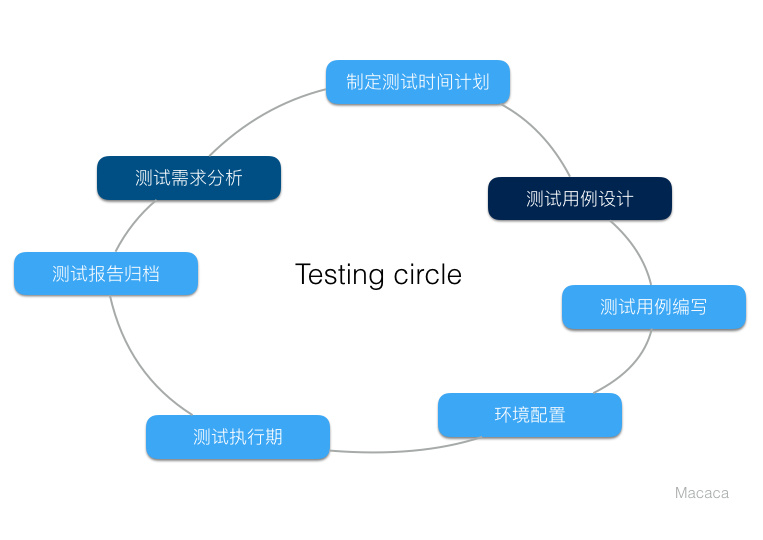
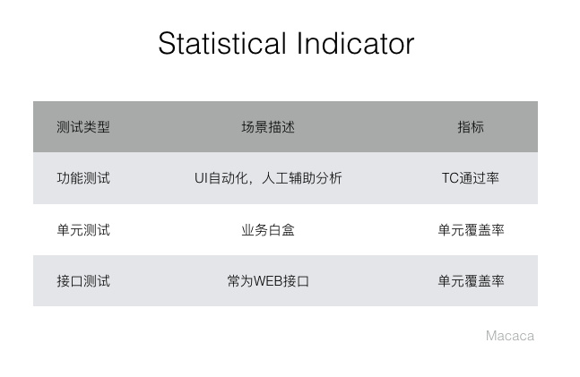
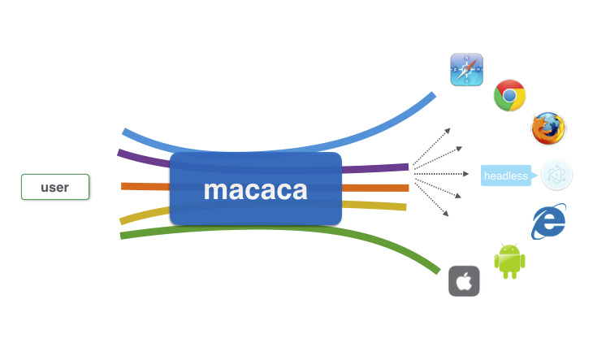
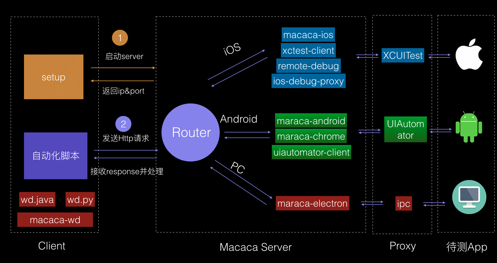
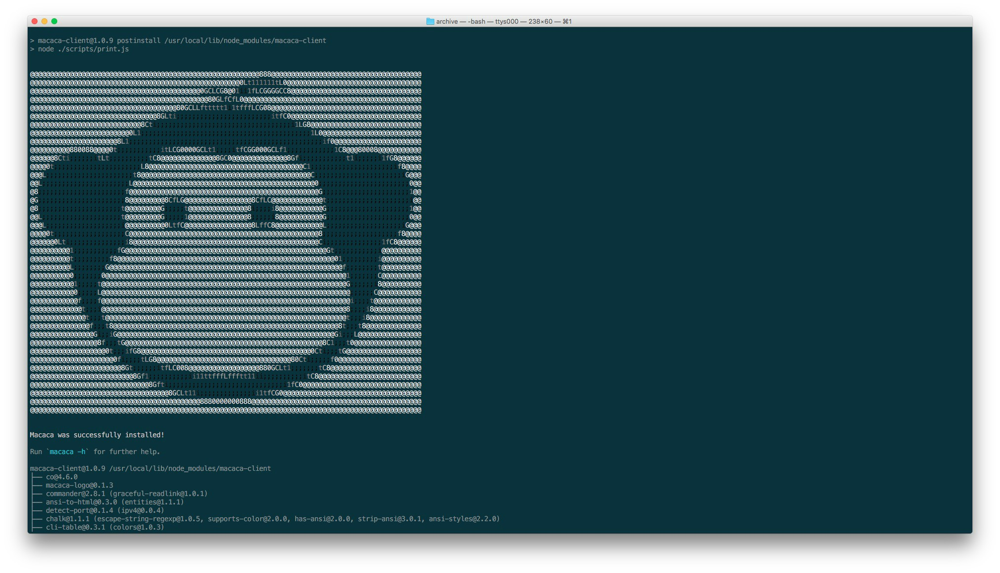
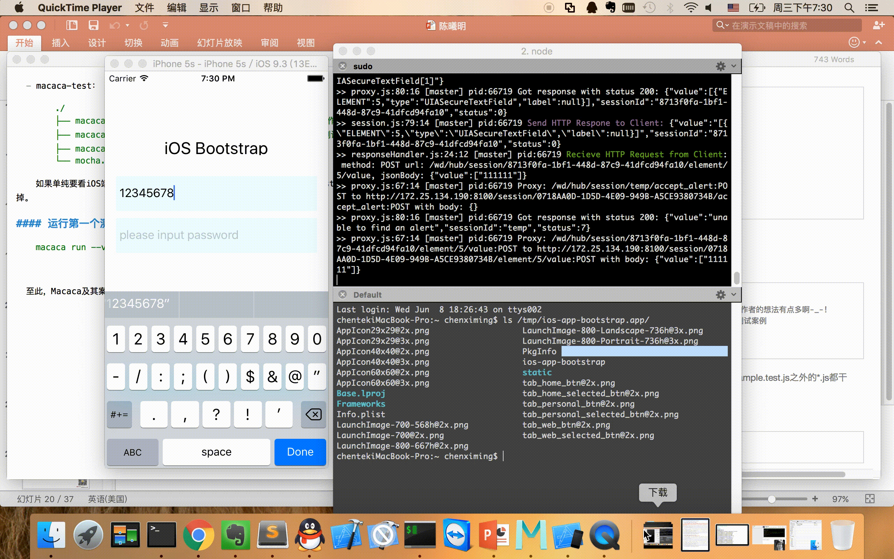
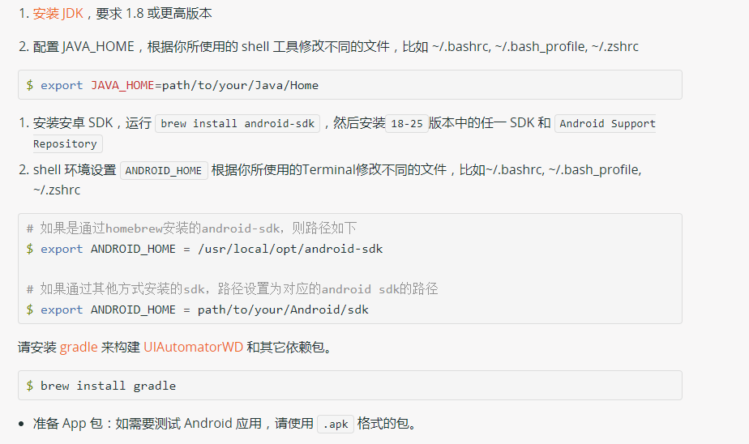

H5动画快速制作
演讲者： 赵健
软件测试保证软件质量的重要而有效的手段,已成为软件工程中重要且不可或缺的一个环节
常规的测试工程周期
指标
分层考虑
我们提到的模块化不止是代码结构上的模块化，而是从用例的可分层开始考虑，将各层次的测试按照业务生产上的需要，进行合理划分，做到真正意义上的模块化
Macaca是什么？
完整的自动化测试解决方案--阿里系开源框架
跨平台
多语言栈
标准化
提供CI方案
支持真机
跨平台
同时支持PC端和移动端(Android、iOS)自动化测试 
多语言栈
支持JavaScript（Node.js）、Java、Python
标准化
遵循W3C webdriver 标准，多端无忧，理解成本降低
提供持续集成方案及持续集成平台的私有部署方案--docker/reliable
真机和模拟器

Macaca执行流程

快速上手
# 安装工具包和驱动$ npm i macaca-cli -g安装完成
查看环境
$ macaca doctor
官方示例
# 拉取官方示例
$ git clone https://github.com/macaca-sample/sample-nodejs.git --depth=1
$ cd sample-nodejs
安装项目依赖
$ npm i
启动server并打印详细日志
$ macaca run --verbose
web测试
IOS的测试
安装 Xcode8.3 或者更高版本
需要安装 **usbmuxd** 以便于通过 USB 通道测试 iOS 真机，不需要测试真机则不用安装
$ brew install usbmuxd
应用中如含有 WebView
$ brew install ios-webkit-debug-proxy
$ brew install carthage
准备 App 包：如需要测试 iOS 应用，请使用 Scheme 设置为 debug 的 .app 包
IOS测试
Android的测试
安装 JDK，要求 1.8 或更高版本 
THE END
谢谢！